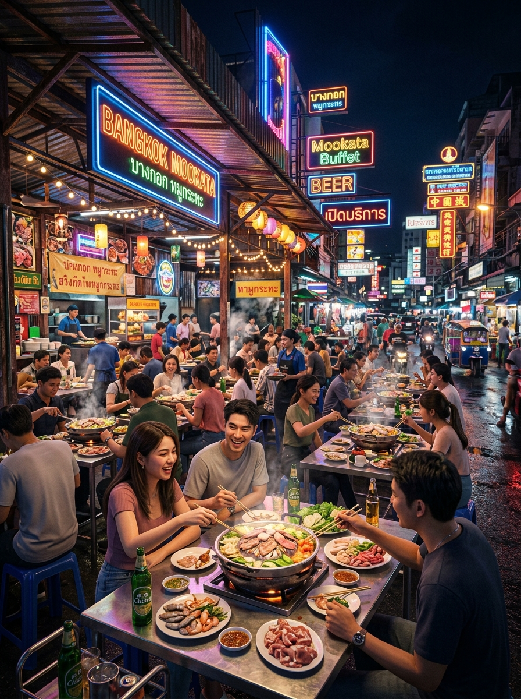
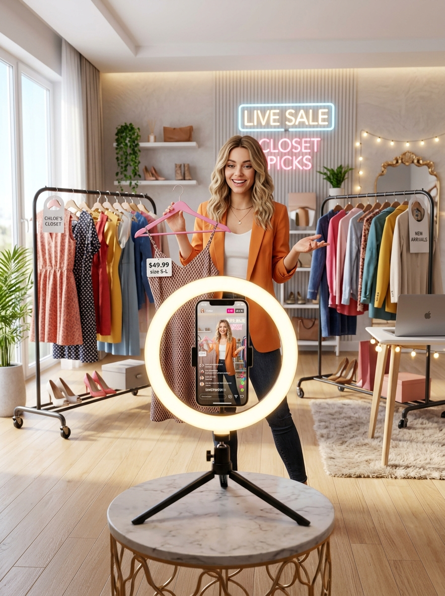
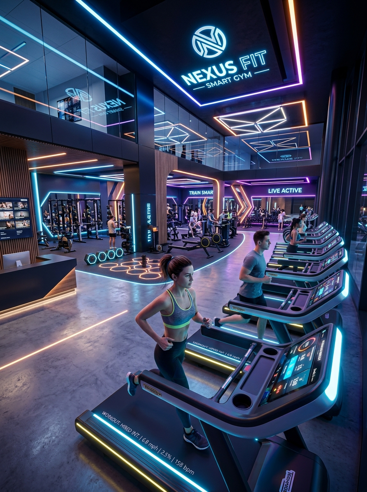

Fundamentals of Data Science (พื้นฐานวิทยาการข้อมูล)
ผู้สอน: อาจารย์สุรชัย โกยสันติสุข | คณะการสร้างเจ้าของธุรกิจ มหาวิทยาลัยศรีปทุม
โฟกัส "อดีต" ถึง "ปัจจุบัน"
เกิดอะไรขึ้น? (What happened?)
ทำไมจึงเกิด? (Why did it happen?)
โฟกัส "อนาคต"
อะไรจะเกิดขึ้น? (What will happen?)
เราควรทำอย่างไร? (What should we do?)

โจทย์: ทำรายงานสรุปจำนวนผู้โดยสารสถานีสยามและอโศก ในช่วงเวลา 07.00 - 09.00 น. ของเดือนที่ผ่านมา เพื่อดูความหนาแน่น
คุณค่าทางธุรกิจ: ช่วยให้รู้ว่าควรจัดเจ้าหน้าที่รักษาความปลอดภัยเพิ่มที่จุดไหนในช่วงเวลาใด
โจทย์: ระบบ Real-time ที่วิเคราะห์จำนวนคนแตะบัตรเข้าสถานีรอบนอก แล้ว ทำนาย ว่าอีก 30 นาทีข้างหน้า สถานีสยามจะหนาแน่นระดับใด
คุณค่าทางธุรกิจ: ระบบส่งแจ้งเตือนลูกค้าล่วงหน้าผ่านแอปฯ พร้อม แนะนำเส้นทางหลีกเลี่ยง (Prescriptive) หรือปล่อยขบวนรถเสริมอัตโนมัติ
โจทย์: ดึงข้อมูลจากระบบ POS เพื่อดูความสัมพันธ์ระหว่างยอดขาย "ร่มและเสื้อกันฝน" กับ "วันที่ฝนตกใน กทม." ของปีที่แล้ว
คุณค่าทางธุรกิจ: เป็นการพิสูจน์สมมติฐานว่าฝนตกทำให้สินค้านี้ขายดีจริง (Diagnostic Analytics)
โจทย์: ระบบดึง API พยากรณ์อากาศล่วงหน้า 3 วัน ถ้าพยากรณ์ว่าฝนจะตกหนักเกิน 70% ระบบจะ "สั่งสต็อกร่มเพิ่มอัตโนมัติ" ไปยังศูนย์กระจายสินค้า
คุณค่าทางธุรกิจ: เปลี่ยนจากการรอให้คนของขาดแล้วค่อยสั่ง เป็นระบบอัตโนมัติที่ลดความผิดพลาดของคน (Prescriptive)
โจทย์: หลังจบไลฟ์ 3 ชั่วโมง นำข้อมูลมาสรุปบน Dashboard ว่าชุดเดรสสีไหนถูก CF (Confirm) มากที่สุด
คุณค่าทางธุรกิจ: เพื่อเตรียมสั่งผลิตสำหรับสต็อกในรอบถัดไป
โจทย์: "ระบบวิเคราะห์ข้อความแชท (NLP)" แบบ Real-time ขณะไลฟ์
คุณค่าทางธุรกิจ: ระบบจับ Sentiment และข้อความคนดู แล้วกระซิบบอกแม่ค้าผ่านจอมอนิเตอร์ว่า "ตอนนี้คนดู 40% พิมพ์ถามถึงเสื้อคลุมสีเบจ รีบหยิบมาโปรโมทคู่กันเลย!"


| มิติการเปรียบเทียบ | Data Analytics (DA) | Data Science (DS) |
|---|---|---|
| คำถามหลัก | เกิดอะไรขึ้น? ทำไมถึงเกิด? | อะไรจะเกิดต่อไป? ควรทำอย่างไร? |
| ผลลัพธ์ (Output) | รายงาน (Reports), กราฟ (Dashboards) | โมเดลทำนาย (Models), ระบบอัตโนมัติ |
| ความซับซ้อน | สถิติพื้นฐาน, Excel, SQL, BI Tools | Machine Learning, AI, Python, สถิติขั้นสูง |
| บทบาทในธุรกิจ | ช่วยให้เข้าใจสถานการณ์ปัจจุบัน | สร้างกลยุทธ์ล่วงหน้าและสร้างความได้เปรียบ |
| ตัวอย่าง (ร้านกาแฟ) | "วันจันทร์เมนูลาเต้ขายดีที่สุด" | "ถ้าระบบสะสมแต้มแบบใหม่ลดราคา 10% จะเพิ่มยอดลูกค้าประจำได้ 15%" |
📌 สแกน QR Code เพื่อรับใบงาน (Worksheet)